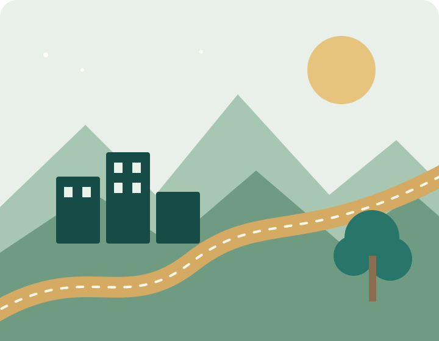

⌕
01 / ANALYZE
分析與決策
練習定義問題、判讀資料、比較方案與說明決策理由，建立有邏輯、可追溯的分析流程。
經營管理不只是學習如何管理企業，更是學習如何看見問題、理解需求、整合不同觀點，並在有限資源下做出有根據的選擇。
本網站以慈濟大學經營管理學系為主題，呈現系所形象、學習方向與學生專題成果。網站內容為課堂建置的形象展示版本，正式公開前應由系所確認課程、師資、招生及聯絡資訊。
管理能力需要在情境中練習。從提出問題、蒐集資料，到形成方案與檢視成果，讓學習不只停留在課本。
練習定義問題、判讀資料、比較方案與說明決策理由，建立有邏輯、可追溯的分析流程。
從使用者需求出發，將想法轉化為企劃架構，思考市場、資源、成本、執行方式與成果衡量。
透過分工、討論、簡報與回饋，學習整合不同專長，並在團隊中負責任地完成任務。
理解資料在營運、行銷與管理中的角色，培養工具應用、資訊判讀與數位溝通能力。
思考企業決策對環境、社會與利害關係人的影響，讓經營成果與公共價值兼顧。
從地方產業、校園服務與社區需求觀察問題，提出符合情境、可逐步落實的改善構想。
以下為專題學習的示意流程，可依課程與實際專案調整。
辨識利害關係人，整理現況，將模糊的想法轉成清楚的問題。
蒐集可靠資料、訪談或問卷，整理證據並確認需求與限制。
建立目標、時程、分工與預算，製作原型並測試可行性。
依指標檢視成果，整理學習反思，向不同對象清楚呈現提案。
下列為管理領域的課程方向示例，並非正式課程清單；實際課名、學分與開課年級請以校方最新公告為準。
認識管理職能、組織運作、領導、團隊合作與組織文化。
理解成本、預算、財務資訊與資源配置，建立經營判斷基礎。
分析市場、顧客需求、品牌定位、行銷溝通與服務體驗。
透過資料整理、基本統計與圖表表達，支持問題分析與決策。
理解人才招募、培訓、績效回饋、職涯發展與工作關係。
將需求轉化為可執行方案，練習時程、風險、成本與成果管理。
經營管理的知識可應用於企業、非營利組織、公共服務、地方創生與新創團隊。真正的職涯方向，仍需依個人興趣、專長、實習經驗與持續進修逐步探索。

學生作品頁將逐步收錄課程專題、企劃提案、研究成果、活動紀錄與影音作品。所有內容應經作者同意並標註必要資訊。

從問卷、訪談與公開資料中整理觀察，將證據轉化為清楚的發現與建議。

理解目標受眾，發展品牌定位、溝通內容與行銷活動的執行架構。

以服務設計與跨域協作回應真實需求，探索兼顧可行性與公共價值的方案。
短片示範本系網站如何呈現學習理念與作品精神。後續可替換成學生實際拍攝的校園、課程、專題訪談及成果發表影片。
本段約 13 秒，使用專案內製作的圖像搭配繁體中文標題製作，影片檔案已存放於 graph 資料夾，符合相對路徑讀取方式。
實拍素材推薦：Pixabay 學生討論照片 · Pixabay 學生合作影片 · Pexels 團隊合作影片
歡迎從課程方向與學生作品開始認識本系。